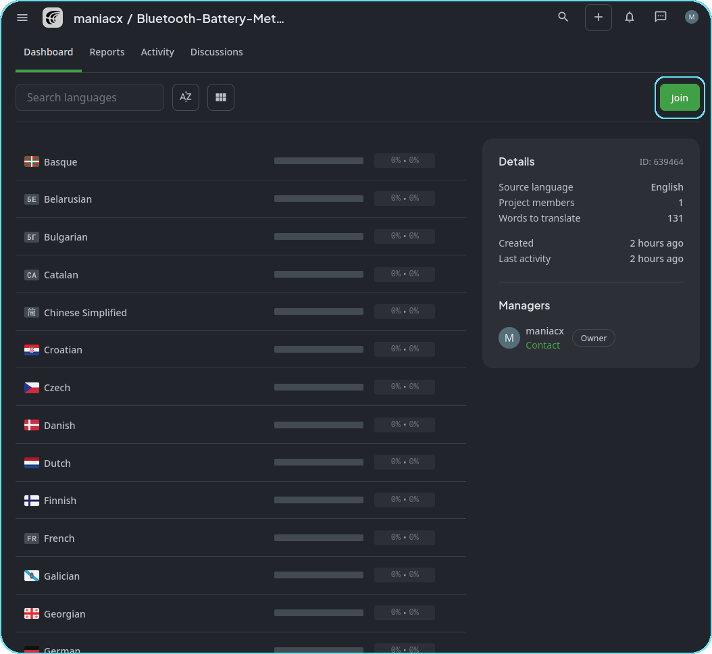
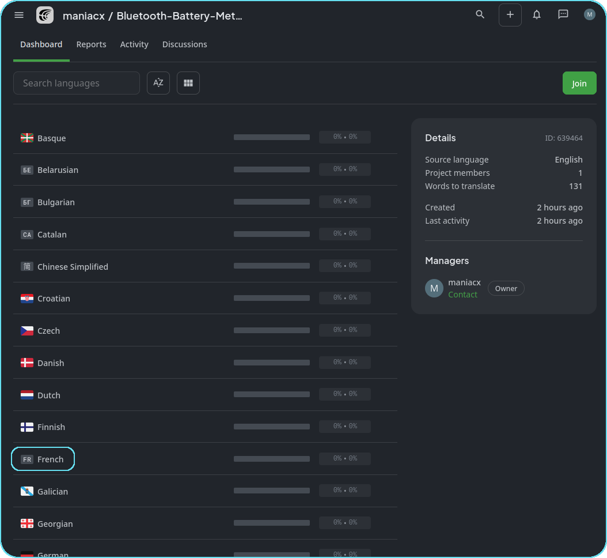
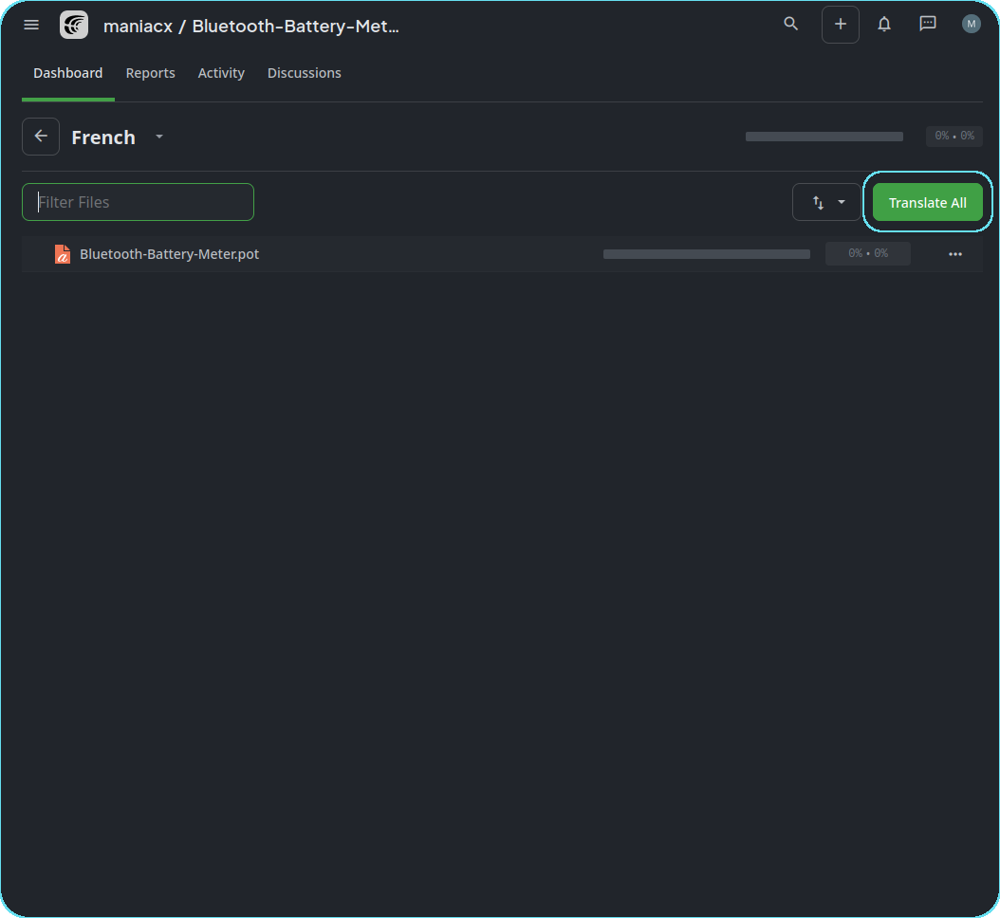

Crowdin Guide
This guide covers the use of Crowdin for translating the Bluetooth-Battery-Meter project. Click below button move to crowdin site for this project.
Start Translating
Example: Translating to French
1. Open the project from the link above and Join

2. Choose the Language to Translate
Translators cannot add new languages to the project. If the language you wish to translate to is not listed, Raise an issue on Github to request its addition.

3. Click on Translate All

4. Select the string to translate.
5. Choose an appropriate suggested translation or type your translation in the box.
6. Once string translations are done, use the back button on the top-left corner.

7. Click on the 3-dot menu and select Download